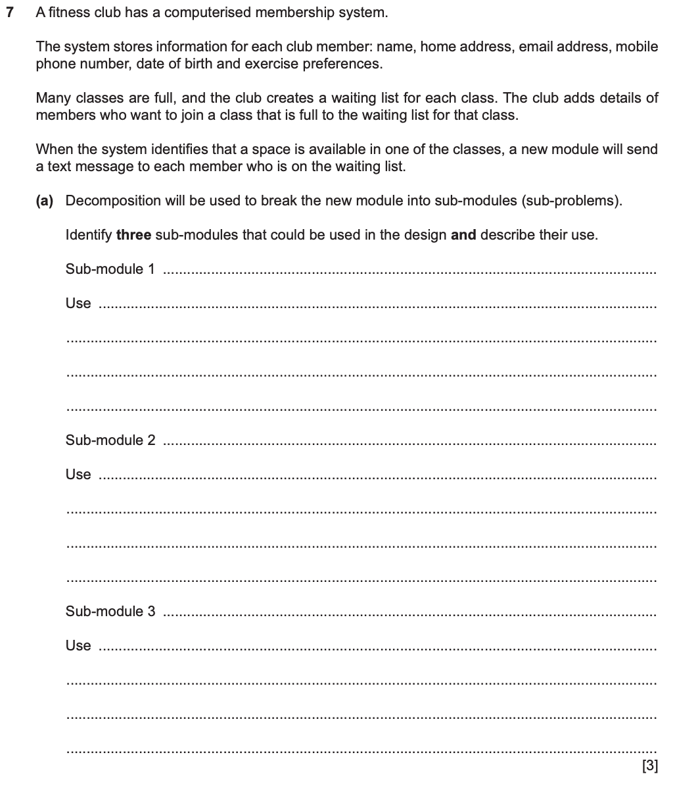
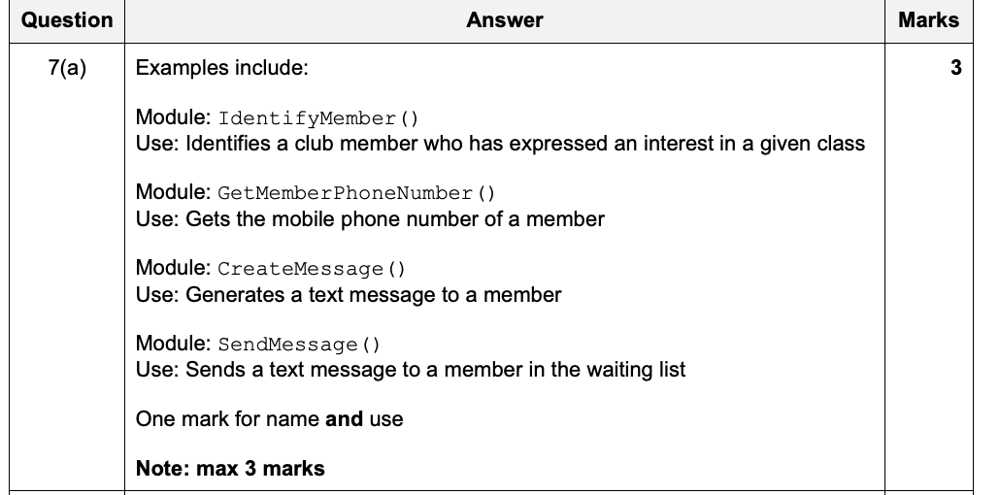

Design a ticket system · Concept 16
Give each module a clear responsibility
Observe
Follow information between responsibilities
- CheckQuantity needs Quantity and PlacesLeft
- CalculateCharge needs Quantity and Student
- Payment needs the calculated Total and the amount Paid
- Receipt needs the confirmed result
Look, then discuss
Which pieces of the ticket task can be understood and checked separately?
The desk must check a quantity, calculate an amount, accept or reject payment and report a result. Giving every piece the name “process tickets” hides the different work each one performs.
Recall
Recall returned values and effects
A function returns a value that its caller can use, such as an amount in a later comparison. A procedure performs a task when called, such as displaying a receipt. Here we design responsibilities and data flow without requiring full subroutine-declaration syntax.
Explain
Explanation · 1 / 4
Break the whole task into smaller problems
Decomposition divides a complex problem into manageable sub-problems. CheckQuantity decides whether the requested number fits availability. CalculateCharge determines the amount due. CompletePayment handles success or failure according to the payment rule.
Explanation · 2 / 4
State what each part receives and supplies
CalculateCharge receives Quantity and Student, uses fixed TicketPrice 25.00 and returns Total. CompletePayment needs Quantity, PlacesLeft, Total and Paid. Naming a module without stating its job or needed data leaves the design incomplete.
Explanation · 3 / 4
Choose a returned value when later processing needs it
A charge function can return 45.00 so the caller can evaluate Paid >= Total. Merely printing 45.00 does not return it. DisplayReceipt can be a procedure because its required effect is presenting information.
Explanation · 4 / 4
Check cooperation and completeness
The parts together must satisfy the original rules. Rejected payment must not reduce places; receipt generation must not recalculate a different price. Giving one part ownership of a calculation makes a changed rule easier to apply consistently.
| Module | Receives | Returns or does |
|---|---|---|
| CheckQuantity | Quantity, PlacesLeft | Returns whether the request fits |
| CalculateCharge | Quantity, Student | Returns amount due |
| CompletePayment | Quantity, PlacesLeft, Total, Paid | Reports result and updates places only on success |
Work together
Pass the result to the next responsibility
Quantity 2, PlacesLeft 8, Student TRUE and Paid 50.00. TicketPrice is 25.00.
Work together · 1 / 3
Check the request
CheckQuantity determines that 2 is at least one and no greater than 8. The caller may continue to charging.
Work together · 2 / 3
Return the amount due
CalculateCharge obtains subtotal 50.00, applies the student rule and returns 45.00. The caller keeps this numeric value as Total and displays the amount due.
Work together · 3 / 3
Complete the accepted sale
CompletePayment compares 50.00 with 45.00, calculates change 5.00 and changes PlacesLeft to 6. A receipt can use those confirmed values without repeating the charge calculation.
A useful decomposition gives each part a distinct job and connects the data required by the other parts.
Experiment
Follow 2 and TRUE into CalculateCharge and 45.00 back to its caller. Compare a returned result with a displayed message and identify which can supply the payment comparison.
The caller needs an amount for payment and the receipt. Compare returning that amount with only displaying it.
Predict: Will the caller receive a numeric Charge?
Predict the result before revealing a step.
Check
Try it yourself · Teacher-written
Decompose a device hire into availability checking, charge calculation and receipt output. The charge is Quantity × 4.00 + 10.00. Identify a suitable function and its inputs and returned value.
Check your reasoning
An availability module checks the requested quantity against devices available. CalculateCharge can be a function receiving Quantity and returning Quantity * 4.00 + 10.00. A receipt procedure receives the accepted hire details and calculated amount and outputs them. Printing the amount alone does not supply the numeric result to a payment comparison.
Take it further · Optional challenge
Two modules separately calculate a charge. One is updated when the discount changes; the other is not. Explain the defect and improve the design.
Check the challenge
The same order can receive inconsistent amounts. Put the charging rule in one calculation module and let other modules use its returned result. Test that module and the connections after a rule change.
Past paper
Attempt the past-paper questions · 3 marks
1 original question · 1 selected part · 3 marks
Suggested independent working time: 3–6 minutes (teacher estimate).
Answer the original questions first. Open guidance, a teacher solution or the official mark scheme when needed. Only the named parts are assigned; extracts also retain their required shared context.
Original question · Cambridge 9618/22
1. Decompose a waiting-list notification module
Cambridge 9618/22 · May/June 2024 · 7(a) · 3 marks
Selected parts: 7(a) [3].

Hint — reading the question
Suggest three distinct submodules and describe their jobs in the text-message workflow. Names alone do not earn the paired marks.
Reasoning and model answer — teacher-written
| Submodule | Use |
|---|---|
| GetMemberPhoneNumber | Retrieve the mobile number of a member on the class waiting list. |
| CreateMessage | Build a text message identifying the class with an available space. |
| SendMessage | Send that message to the waiting-list member’s mobile number. |
Official mark scheme

Why this earns marks — teacher explanation
One mark is available for each module with its corresponding use, up to three. Identifying interested members is another accepted submodule.
Common mistakes — teacher analysis
“Input, process, output” without the task performed is too vague. An email submodule would not match the required text-message channel.
Cambridge past-paper access page ↗ · Source references and page numbers are shown with each extract. © Cambridge University Press & Assessment / UCLES.
Connect
Keep this idea
Decomposition creates cooperating sub-problems that can be represented as modules with defined inputs and results or effects.
A module name still hides internal work. Next, expand that work until every step is programmable.
Continue: Refine an unfinished step into programmable actions →Learning goals
- Describe and use decomposition
- Break down problems into sub-problems leading to the concept of a program module (procedure / function)